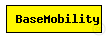
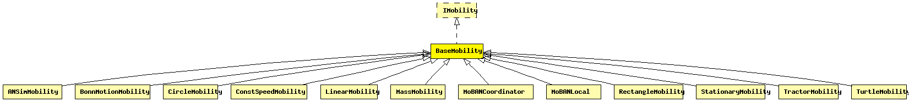

This documentation is released under the Creative Commons license
This documentation is released under the Creative Commons licenseModule which is responsible for mobility related information like position and movement BaseMobility itself defines a static mobility pattern (means only a position, no movement). Mobility modules which extend from this module will define more complex movement patterns.
The following diagram shows usage relationships between types. Unresolved types are missing from the diagram. Click here to see the full picture.
The following diagram shows inheritance relationships for this type. Unresolved types are missing from the diagram. Click here to see the full picture.
| Name | Type | Description |
|---|---|---|
| ANSimMobility | simple module |
Uses the <position_change> elements of the ANSim tool's trace file. |
| BonnMotionMobility | simple module |
Uses the native file format of BonnMotion (http://www.cs.uni-bonn.de/IV/BonnMotion/). |
| CircleMobility | simple module |
Moves the node around a circle. |
| ConstSpeedMobility | simple module |
Controls all movement related things of a host |
| LinearMobility | simple module |
This is a linear mobility model with speed, angle and acceleration parameters. Angle only changes when the mobile node hits a wall: then it reflects off the wall at the same angle. |
| MassMobility | simple module |
This is a random mobility model for a mobile host with a mass. It is the one used in "Optimized Smooth Handoffs in Mobile IP" by Perkins & Wang. |
| MoBANCoordinator | simple module |
This is the coordinator module of the MoBAN mobility model. It should be instantiated in the top level simulation network in MiXiM, once per WBAN. The coordinator module is the main module that provides the group mobility and correlation between nodes in a WBAN. In the initialization phase, it reads three user defined input files which are the postures specification file, a configuration file which includes all required parameter for specific distributions, and the previously logged mobility pattern, if it is requested to use a logged pattern. Note that all WBAN instances may use the same input files if they are exactly in the same situation. |
| MoBANLocal | simple module |
This is the local mobility module of MoBAN. It should be instantiated in each node that belongs to a WBAN. The NED parameter "coordinatorIndex" determine to which WBAN (MoBANCoordinator) it belongs. The current implementation uses the Random Walk Mobility Model (RWMM) for individual (local) movement with a sphere around the node, with given speed and sphere radius of the current posture. The reference point of the node it the current posture, the sphere radius, and the speed is given by the corresponding coordinator through the blackboard. RWMM determines the location of node at ant time relative to the given reference point. |
| RectangleMobility | simple module |
Moves the node around a rectangle. |
| StationaryMobility | simple module |
Defines a static mobility pattern (means only a position, no movement). |
| TractorMobility | simple module |
Moves a tractor through a field with a certain amount of rows. Since the tractor also moves around the field, the tractor travels the number of rows PLUS one rows. Consider the following piece of ascii-art for rows=2. |
| TurtleMobility | simple module |
A LOGO-style movement model, with the script coming from XML. It can be useful for describing random as well as deterministic scenarios. |
| Name | Type | Default value | Description |
|---|---|---|---|
| notAffectedByHostState | bool | true | |
| coreDebug | bool | false |
debug switch for the core framework |
| constraintAreaMinX | double | -1m/0 |
min x position of the constraint area, unconstrained by default (negative infinity) |
| constraintAreaMinY | double | -1m/0 |
min y position of the constraint area, unconstrained by default (negative infinity) |
| constraintAreaMinZ | double | -1m/0 |
min z position of the constraint area, unconstrained by default (negative infinity) |
| constraintAreaMaxX | double | 1m/0 |
max x position of the constraint area, unconstrained by default (positive infinity) |
| constraintAreaMaxY | double | 1m/0 |
max y position of the constraint area, unconstrained by default (positive infinity) |
| constraintAreaMaxZ | double | 1m/0 |
max z position of the constraint area, unconstrained by default (positive infinity) |
| initialX | double | uniform(constraintAreaMinX, constraintAreaMaxX) |
initial x coordinate of the nodes' position |
| initialY | double | uniform(constraintAreaMinY, constraintAreaMaxY) |
initial y coordinate of the nodes' position |
| initialZ | double | uniform(constraintAreaMinZ, constraintAreaMaxZ) |
initial z coordinate of the nodes' position |
| initFromDisplayString | bool | false |
initial position will be read from display string |
| Name | Value | Description |
|---|---|---|
| display | i=block/cogwheel |
// Module which is responsible for mobility // related information like position and movement // BaseMobility itself defines a static mobility // pattern (means only a position, no movement). // Mobility modules which extend from this module // will define more complex movement patterns. simple BaseMobility like IMobility { parameters: bool notAffectedByHostState = default(true); bool coreDebug = default(false); // debug switch for the core framework double constraintAreaMinX @unit(m) = default(-1m/0); // min x position of the constraint area, unconstrained by default (negative infinity) double constraintAreaMinY @unit(m) = default(-1m/0); // min y position of the constraint area, unconstrained by default (negative infinity) double constraintAreaMinZ @unit(m) = default(-1m/0); // min z position of the constraint area, unconstrained by default (negative infinity) double constraintAreaMaxX @unit(m) = default(1m/0); // max x position of the constraint area, unconstrained by default (positive infinity) double constraintAreaMaxY @unit(m) = default(1m/0); // max y position of the constraint area, unconstrained by default (positive infinity) double constraintAreaMaxZ @unit(m) = default(1m/0); // max z position of the constraint area, unconstrained by default (positive infinity) double initialX @unit(m) = default(uniform(constraintAreaMinX, constraintAreaMaxX)); // initial x coordinate of the nodes' position double initialY @unit(m) = default(uniform(constraintAreaMinY, constraintAreaMaxY)); // initial y coordinate of the nodes' position double initialZ @unit(m) = default(uniform(constraintAreaMinZ, constraintAreaMaxZ)); // initial z coordinate of the nodes' position bool initFromDisplayString = default(false); // initial position will be read from display string @display("i=block/cogwheel"); }
This documentation is released under the Creative Commons license